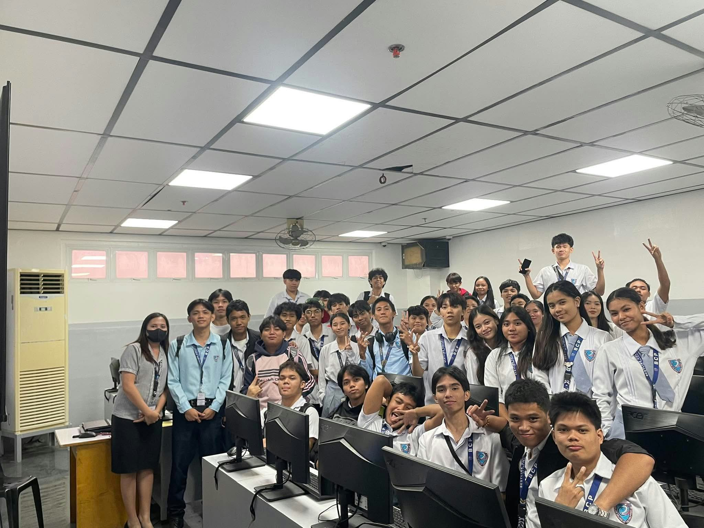
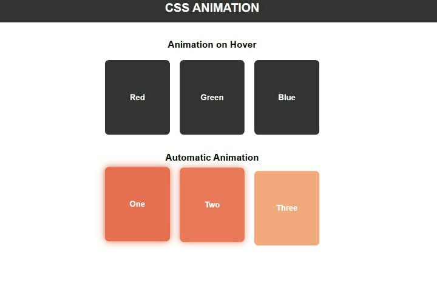

01
about teachers
Teacher day
Teacher Teacher’s Day is a celebration honoring teachers’ dedication and their important role in shaping students’ futures.
View Project ↗MY WORK IN PROGRESS
This page is prepared for my ITE 1 activities and projects. Replace the sample titles, descriptions, images, and links with your own work.
all of my activities that I've finished.

01Teacher Teacher’s Day is a celebration honoring teachers’ dedication and their important role in shaping students’ futures.
View Project ↗
02An interactive web animation project created using HTML, CSS, and JavaScript.
View Project ↗